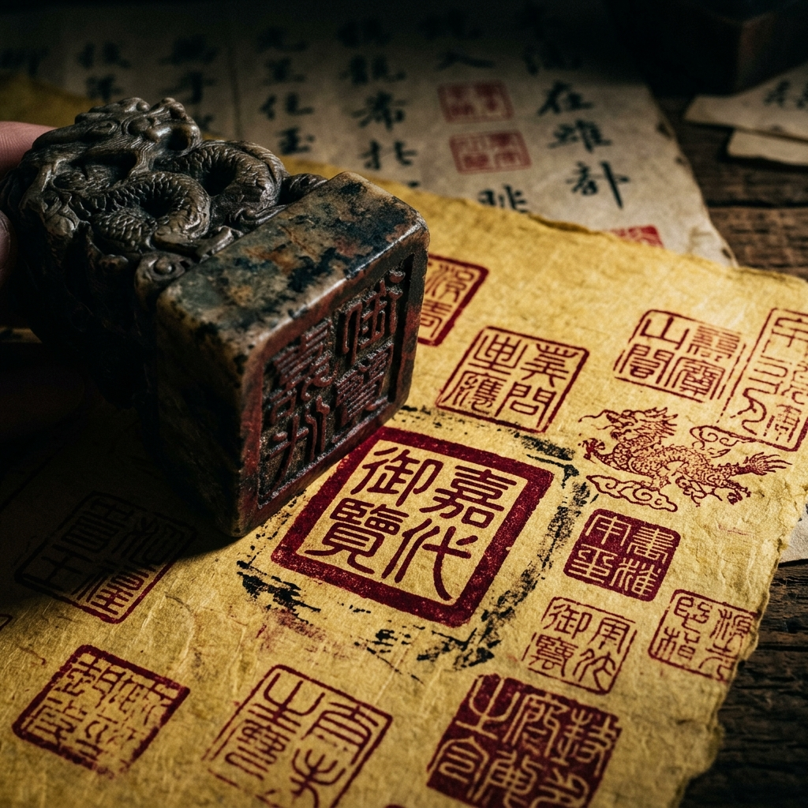
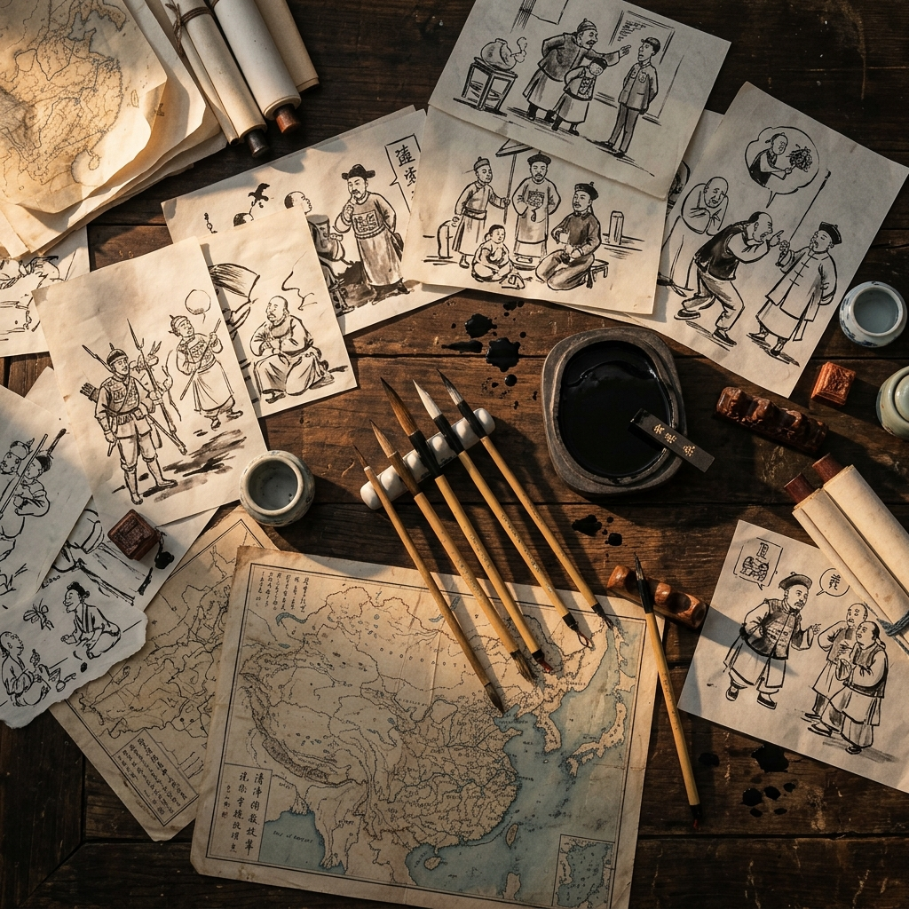
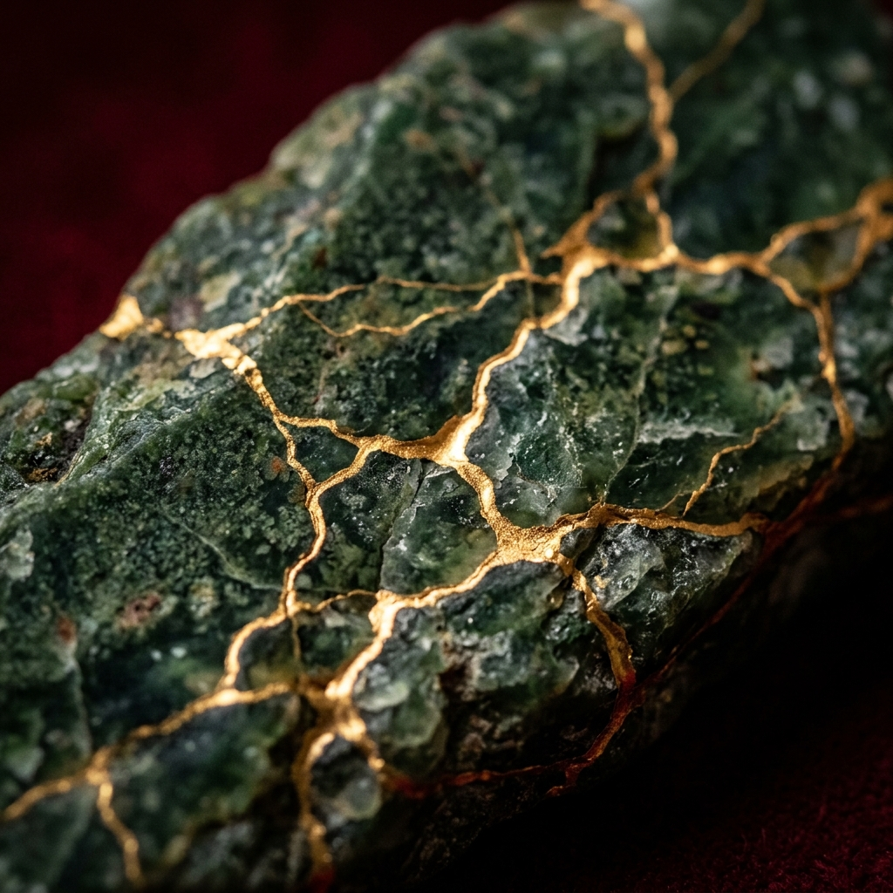

Four designs that extend the front cover's narrative without duplicating it.
Each pairs with either the Jade Dragon or Forbidden City front cover.
Pick the one that feels like the right "closing" for the magazine.

THE ART OF REBELLION
130 student voices. Four centuries of history.
One dynasty's fall, seen through the eyes of a new generation.
Asian History · Grade 9 · Spring 2026
A — The Imperial Seal
Crimson seal impressions on aged parchment. The stamp of authority — now a relic. Connects to the theme of power and its dissolution.
✦ Pairs with either front cover

THE ART OF REBELLION
Where ink meets history.
130 young cartoonists pick up the brush.
Asian History · Grade 9 · Spring 2026
B — The Cartoonist's Table
A bird's-eye view of scattered sketches, ink stones, and brushes. Celebrates the creative process — the "making" behind the exhibition.
✦ Pairs with either front cover
THE ART OF REBELLION
The dynasty fell. The stories remain.
130 voices ask why — and what it meant.
Asian History · Grade 9 · Spring 2026
C — The Fallen Court
Rain-slicked palace floors, amber lanterns, scattered scrolls. A contemplative epilogue — the aftermath of empire. A cinematic closing shot.
✦ Best with: Forbidden City front cover

THE ART OF
REBELLION
What breaks can be reborn in gold.
130 students find beauty in the fractures.
Asian History · Grade 9 · Spring 2026
D — The Kintsugi Dragon
Cracked jade repaired with gold kintsugi veins against crimson. A visual metaphor: finding beauty in what was broken. Directly mirrors the Jade Dragon front cover.
✦ Best with: Jade Dragon front cover